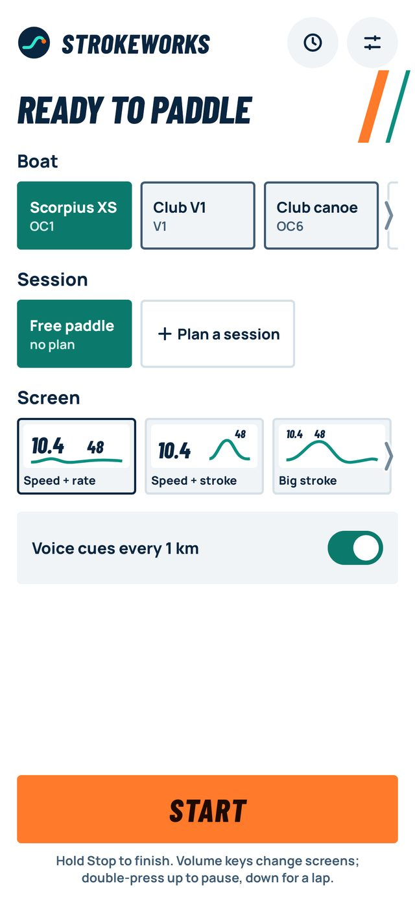
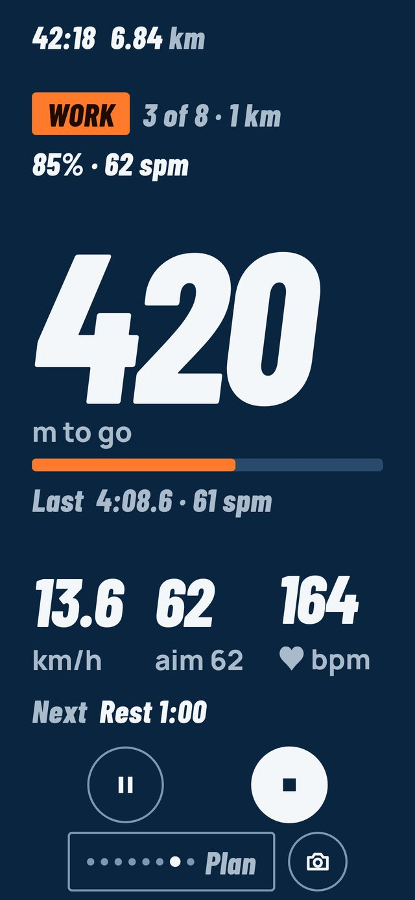
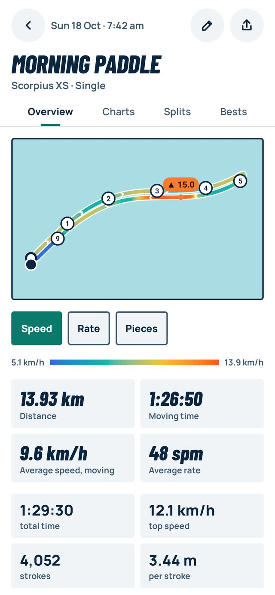
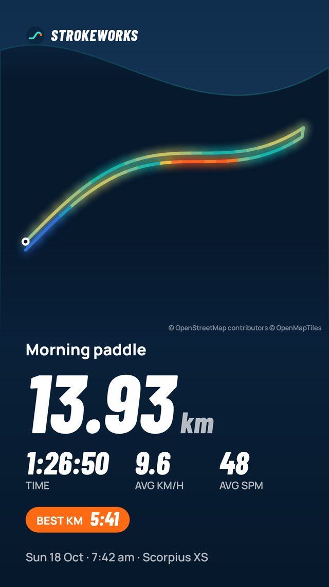
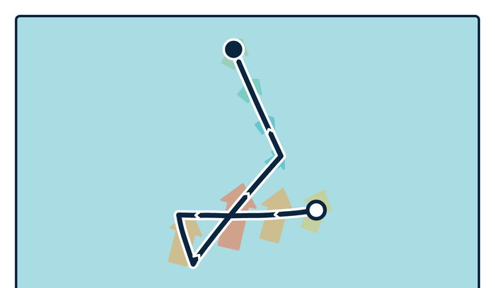
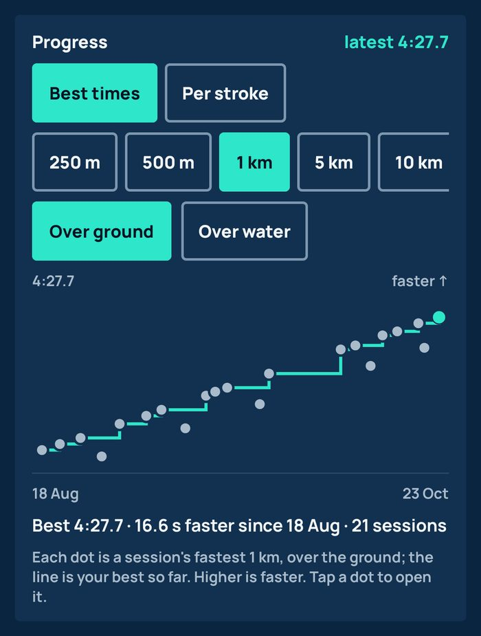

On the water and after
Numbers big enough to read in the sun with water on the screen. Swipe for another screen, or use the volume keys.




Join in three taps
No forms. Use the Google account your phone's Play Store uses.
- Join the testers group
Tap “Join group”. It won't send you emails.
Join the group - Become a tester
Tap “Become a tester”. If it isn't ready yet, give it a few minutes after step 1.
Become a tester - Install and paddle
Install from the Play Store like any app. Updates arrive by themselves.
Get it on Play
Please keep it installed for 14 days: Google needs 12 testers to stay that long before the app can go public. Tell us what's wrong or missing from Settings › About › Send feedback in the app.
Our thanks for staying in the test for 14 days. Sign in with Google in the app (Settings › Account and backup) and Pro switches on for that account when it launches. No code, no card.
What you can try
Everything is unlocked in the test. After launch the everyday features stay free; the ones marked PRO become a paid upgrade.
Six live screens, big numbers, voice calls as you go.
How hard each drive pulls, the same with or against the tide.
Starts when you paddle, pauses when you stop. Laps with two taps.
From a chest strap or a watch that broadcasts it.
Ready-made sets, your own, and pieces found for you.
The tide or current taken off, so effort reads the same both ways.
Best times and distance per stroke over the weeks.
Pictures and flyby videos for Instagram and Strava.
FIT, GPX and TCX files. Backed up to your Google account.


Questions
I've got an iPhone
Android only for now. Email us “iPhone please” and we'll tell you when it's ready. Each one helps us decide when to build it.
Where does the phone go?
Anywhere it stays put and you can see it: a deck mount, a dry bag under a bungee, or a pocket if you only want the numbers afterwards and by voice.
What does it cost?
Nothing in the test. After launch the everyday features stay free. Pro will be a paid upgrade, and testers who stay 14 days get 12 months of it free.
What happens to my data?
Your sessions stay on your phone. You can choose to back them up to your Google account, and to share them with us to improve stroke detection. See the privacy policy.